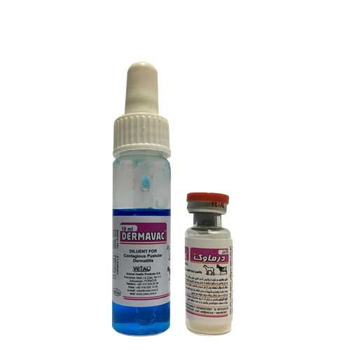

واکسن اکتیمای واگیردار، وتال
📝ترکیب واکسن:
واکسن درماوک حاوی ویروس زنده تخفیف حدت یافته اکتیما می باشد که بصورت لیوفیلیزه همراه با حلال عرضه شده است.
📝موارد مصرف:
ایجاد ایمنی فعال بر علیه بیماری اکتیمای واگیر در بره و بزغاله (بصورت عمده) و نیز گوسفند و بز (در شرایط حضور مداوم و شدید بیماری) که با هدف پیشگیری از بروز بیماری و نیز بعنوان کاهش دهنده دوره و علائم بیماری در گله (در صورت بالا بودن تیتر ویروس وحشی در حال چرخش و یا در شرایط همه گیری بیماری) مورد استفاده قرار می گیرد.
🔹نکته مهم:
این واکسن تنها در واحدهای اپیدمیولوژیک که بیماری اکتیما در آنجا بروز نموده و یا سابقه رخداد بیماری دارند، اجازه مصرف دارد.
📝برنامه واکسیناسیون با درماوک:
◻️گوسفند و بز غیر آبستن: زمان تلقیح: 4-3 هفته قبل از زمان ظهور بیماری، محل پیشنهادی تخریش جهت تلقیح: در پوست لبه داخلی ران یا کشاله ران، میزان دز: 3 قطره از واکسن آماده
◻️گوسفند و بز آبستن: زمان تلقیح: در طول دوره آبستنی با رعایت کامل اصول اکسیناسیون دامهای آبستن (خصوصا در ۷ هفته پایانی) ،محل پیشنهادی تخریش جهت تلقیح: در چین پوستی طرفین قاعده دم ، میزان دز: 3 قطره از واکسن آماده
◻️نوزادان بره و بزغاله: زمان تلقیح: از روز نخست پس از تولد، محل پیشنهادی تخریش جهت تلقیح: در فاصله بین پاهای قدامی و قفسه سینه، میزان دز: 3 قطره از واکسن آماده
📝تلقیح یاد آور و تکرار:
ایمنیت محافظت کننده در دام هدف حدود ۲۱ روز پس از تلقیح واکسن بروز نموده و حداقل ۶ ماه بطول می انجامد؛ لذا در مناطقی که بیماری به شکل حاد (علائم بالینی حاد) و مداوم حضور دارد، تلقیح یادآور ۶ ماه پس از تلقیح اولیه و تکرار آن هر ۶ ماه یکبار توصیه می گردد.
📝اختصاصات تلقیح واکسن:
1️⃣ آماده سازی واکسن: بدین منظور می بایست پودر لیوفیلیزه و حلال اختصاصی آن تحت شرایط مطلوب با یکدیگر مخلوط گردند.
🔹نکته مهم
واکسن آماده شده می بایست ضمن حفظ دمای مطلوب و نگهداری بدور از نور خورشید، ظرف مدت ۸ ساعت مصرف گردد. در غیر این صورت ویروس موجود در واکسن بسرعت غیرفعال شده و خاصیت ایمنی زایی خود را از دست میدهد. لذا استفاده از کیف حمل واکسن به همراه lce Pack، برای اکیپهای عملیاتی کاملا ضروری است.
2️⃣ ایجاد خراش پوستی: با استفاده از ابزار تخریش مناسب و تمیز (ترجیحا استریل شده با آب جوش) دو یا سه خراش به طول حدود ۲ سانتی متر در پوست ایجاد شود. خراش بایستی به اندازهای عمیق باشد که منجر به خونریزی نگردد. در صورت عدم دسترسی به ابزار تخریش مناسب می توان از سرسوزن استریل شماره ۱۶ استفاده نمود.
3️⃣ تلقیح: با استفاده از قطره چکان مخصوص، ۳ قطره از واکسن آماده را در بالای محل تخریش شده، چکانده و برای مدت کوتاهی دام ساکن نگه داشته شود تا از جذب واکسن به محل تخریش شده اطمینان حاصل گردد.
4️⃣ پایش تلقیح: ۷ الی ۱۰ روز پس از واکسیناسیون، محل تلقیح را بمنظور مشاهده بثورات جلدی ناشی از واکسیناسیون در تعدادی از دامها (۱۰ درصد گله) مورد ارزیابی قرار دهید تا از مؤثر بودن نحوه اجرای واکسیناسیون و تأثیر اولیه واکسن اطمینان حاصل گردد.
🔹نکته مهم:
عدم مشاهده بثورات می تواند بدلیل روش نامطلوب نگهداری، حمل و آماده سازی واکسن یا عملیات نامطلوب واکسیناسیون باشد که منجر به عدم کارایی واکسن و برنامه واکسیناسیون می شود. در این شرایط می توان واکسیناسیون مجدد را تجویز نمود، به شرط آنکه عدم بروز بثورات به علت سابقه ایمن سازی قبلی حیوان نباشد.
📝الزامات واکسیناسیون با درماوک:
از تلقیح واکسن در هوای بارانی و خیس بودن پوست دام خودداری شود. و از مصرف کورتیکواستروئیدها و تضعیف کننده های سیستم ایمنی ظرف مدت ۲۸ روز قبل و پس از واکسیناسیون پرهیز گردد.
واکسیناسیون انفرادی یا دسته ای در یک گله قابل قبول نبوده و واکسیناسیون همزمان تمامی دام های موجود در گله الزامی می باشد
استفاده همزمان این واکسن باسایر واکسن های زنده مانند بروسلوز توصیه نمیشود. در این موارد فاصله زمانی یک ماهه بین تلقیح این واکسن و تزریق واکسن زنده مطلوب می باشد.
پاکسازی محل تلقیح واکسن (خراش) قبل و پس از واکسیناسیون تنها بطریق فیزیکی توصیه می شود؛ زیرا مواد ضدعفونی کننده باعث نابودی ویروس زنده موجود در واکسن میشوند.
به دلیل زئونوز بودن ویروس واکسن، واکسیناتور بایستی در زمان واکسیناسیون از دستکش وینیلی یا دستکش لاتکسی (فاقد پودر)، ماسک و عینک محافظت کننده استفاده نموده و پس از اتمام واکسیناسیون نیز دستها را بخوبی شسته و ضدعفونی نماید.
📝دوره پرهیز از مصرف:
ندارد.
📝بسته بندی و عمر قفسه ای:
درماوک به صورت لیوفیلیزه و در ویالهای ۵۰، ۱۰۰ و ۲۰۰ دزی به ترتیب همراه با حلال ۱۰، ۲۰ و ۴۰ میلی لیتری عرضه شده و تحت شرایط مطلوب نگهداری تا ۲ سال از تاریخ تولید اعتبار مصرف دارد.